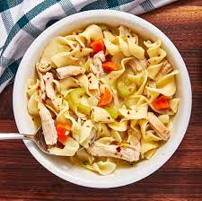

Turkey Noodle Soup
Turkey Noodle Soup

What noodles and turkey should I use?
I always use wide egg noodles and turkey breast. If you have leftover turkey from a holiday such as Thanksgiving, this recipe is perfect for utilizing it.
Ingredients
For this recipe, we are going to use turkey stock. If you'd like to make your own broth, go for it!
- 2 tbsp. extra-virgin olive oil
- 2 medium Carrots, peeled and chopped
- 2 stalks Celery, sliced
- 1 medium Yellow Onion, chopped
- 1 Leek, cleaned and chopped, whites and light green parts only
- Kosher Salt (to taste)
- Ground Black Pepper (to taste)
- 3 cloves Garlic, minced
- 4 cups Turkey Stock (or low Sodium Chicken Broth)
- 3 cups water
- 1 Bay leaf
- 1 tsp. Dried Oregano
- 1 package Egg noodles
- 3 cups cooked shredded Turkey
How to make Turkey Noodle Soup!
- In a large pot over medium heat, heat oil. Add carrots, celery, onion, and leek and cook until soft, 5 minutes. Season with salt and pepper. Add garlic and cook until fragrant, 1 minute more.
- Add broth, water, bay leaf, oregano. Bring to a boil, then add egg noodles. Cover and cook until pasta is cooked through, 7 minutes. Discard bay leaf.
- Add turkey and simmer until warmed through, 5 minutes. Season with more salt and pepper.
Congratulations and enjoy your Turkey Noodle Soup!
Back to Home!